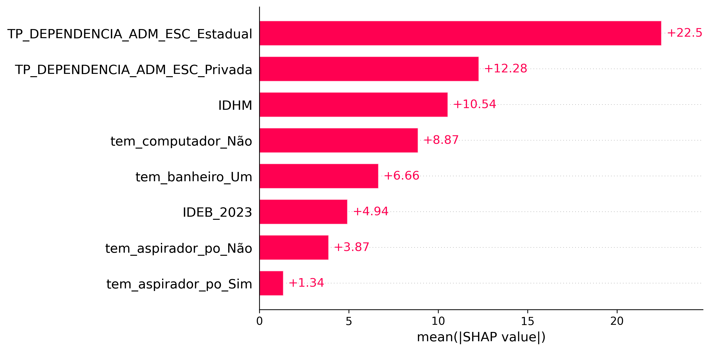
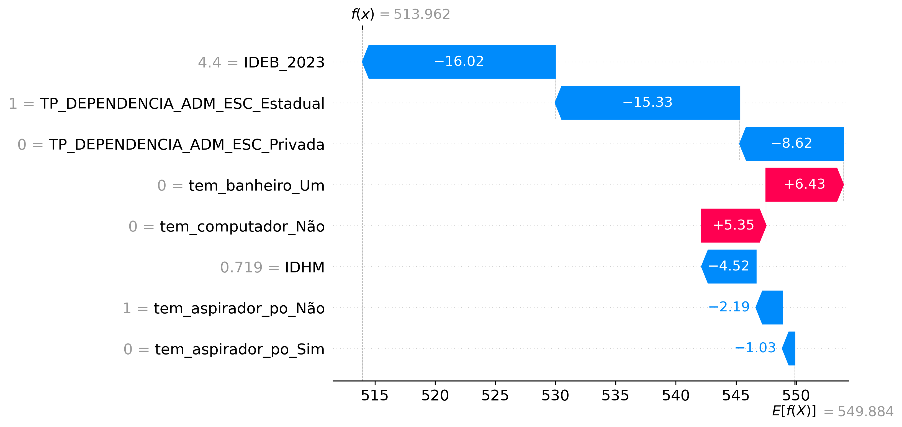
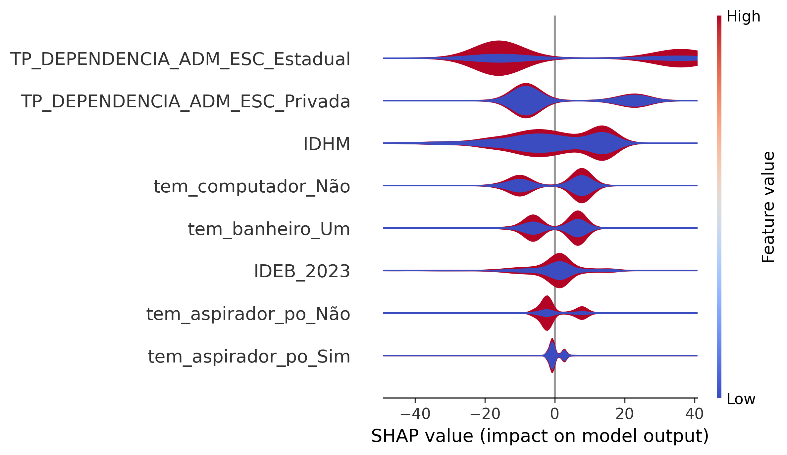
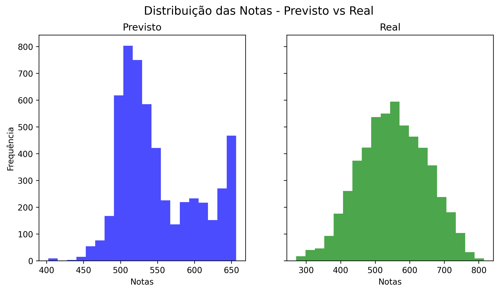

Modelo de estimação de notas do ENEM 2023
Metodologia
Objetivo do modelo
Este repositório contém um modelo de machine learning desenvolvido para estimar as notas do ENEM 2023 com base em dados demográficos e socioeconômicos dos participantes. O foco inicial é no estado de Goiás, utilizando o algoritmo XGBoost para prever as notas nas diferentes áreas do exame.
Escopo do modelo
O modelo refere-se as notas do ENEM 2023 para o estado de Goiás, com base em dados coletados pelo INEP. O objetivo é analisar como variáveis como idade, gênero, renda familiar e escolaridade dos pais influenciam o desempenho dos estudantes.
Contexto do problema
O Exame Nacional do Ensino Médio (ENEM) é uma das principais formas de avaliação educacional no Brasil, influenciando o acesso ao ensino superior. Compreender os fatores que impactam o desempenho dos estudantes pode ajudar a identificar desigualdades e orientar políticas educacionais.
Neste contexto, é fundamental analisar como variáveis demográficas e socioeconômicas influenciam as notas dos participantes. Este modelo visa fornecer insights valiosos para educadores, formuladores de políticas e pesquisadores interessados em melhorar a qualidade da educação no país.
Gerenciamento de dados
Os dados utilizados neste projeto foram obtidos do INEP e incluem informações detalhadas sobre os participantes do ENEM 2023, como idade, gênero, renda familiar, nível de escolaridade dos pais, entre outros. O pré-processamento dos dados envolveu a limpeza, transformação e seleção das variáveis mais relevantes para a modelagem.
Em relação a amostra utilizada foram considerados participantes do ENEM 2023 que residem no estado de Goiás, que estavama presentes em todas as provas do ENEM 2023, incluindo Linguagens e Códigos, Matemática, Ciências Humanas e Ciências da Natureza, que responderam o questionário socioeconômico e que tiveram suas notas divulgadas pelo INEP e que não apresentaram notas zeradas ou faltantes.
A análise exploratória dos dados foi realizada para entender a distribuição das notas e a correlação entre as variáveis, utilizando visualizações gráficas e estatísticas descritivas.
Os dados passaram por transformações, incluindo normalização e codificação de variáveis categóricas, para garantir a compatibilidade com o algoritmo XGBoost.
Outro ponto de transformação de dados foi a utilização da média das provas do ENEM 2023, que foi calculada como a média aritmética das notas obtidas nas provas de Linguagens e Códigos, Matemática, Ciências Humanas e Ciências da Natureza. Essa média foi utilizada como variável alvo para o modelo de machine learning.
Além das variaveis contidas no questionário socioeconômico, foram adicionadas variáveis externas, como o Índice de Desenvolvimento Humano (IDH) do município de residência dos participantes e o percentual de uso do programa Bolsa Familia no ano de 2023, para enriquecer a análise.
Para selecionar as amostras mais relevantes foi utilizada a técnica SelectKBest, que ajudou a identificar as variáveis com maior impacto nas notas do ENEM.
üìå Gráfico Feature Importance

O gráfico acima mostra as variáveis mais influentes no modelo, com base nos valores SHAP médios absolutos.
Análise dos dados
A análise dos dados revelou que as variáveis mais significativas para a previsão das notas do ENEM incluem:
- Idade: A idade dos participantes mostrou uma correlação positiva com as notas, indicando que estudantes mais velhos tendem a obter notas mais altas.
- Escolaridade: A escolaridade dos participantes e de seus pais teve um impacto significativo nas notas, com estudantes cujos pais possuem nível superior apresentando notas mais altas.
- Localização: A localização geográfica dos participantes também influenciou as notas, com estudantes de áreas urbanas apresentando desempenho superior em comparação com aqueles de áreas rurais.
- Renda familiar: A renda dos participantes mostrou uma correlação positiva com as notas, indicando que estudantes de famílias com maior renda tendem a obter notas mais altas.
- Escolaridade dos pais: A escolaridade dos pais também teve um impacto significativo, com estudantes cujos pais possuem nível superior apresentando notas mais altas.
- Gênero: A análise revelou diferenças de desempenho entre gêneros, com meninas apresentando notas ligeiramente superiores em algumas áreas.
Premissas
O modelo assume que as variáveis demográficas e socioeconômicas têm um impacto significativo nas notas do ENEM, e que esses dados são representativos da população de estudantes do estado de Goiás.
O modelo também assume que a média das notas das provas do ENEM 2023 é uma métrica válida para avaliar o desempenho dos estudantes.
Descrição da técnica
O modelo utiliza o algoritmo XGBoost, que é uma implementação eficiente do gradient boosting. Este algoritmo é conhecido por sua capacidade de lidar com grandes volumes de dados e por sua eficácia em tarefas de regressão e classificação.
O XGBoost foi escolhido devido à sua robustez e capacidade de lidar com dados complexos, além de permitir a interpretação dos resultados através da importância das variáveis.
O modelo foi treinado utilizando validação cruzada para garantir a generalização e evitar overfitting. As métricas de desempenho incluem o erro médio absoluto (MAE) e Erro absoluto médio percentual (MAPE).
Identificação da tecnica
A técnica de machine learning utilizada é o XGBoost, que é uma implementação eficiente do gradient boosting. Este algoritmo é amplamente utilizado em competições de ciência de dados devido à sua eficácia em tarefas de regressão e classificação.
Fundamentação teórica
O XGBoost é baseado na técnica de boosting, que combina múltiplos modelos fracos para criar um modelo forte. Ele utiliza árvores de decisão como base, onde cada árvore é treinada para corrigir os erros da árvore anterior.
Forma de representação do modelo
O modelo é representado por um conjunto de árvores de decisão, onde cada árvore contribui para a previsão final. A importância das variáveis é calculada com base na redução do erro que cada variável proporciona ao modelo.
Conforme apresentado pelos shapley values, as variáveis mais importantes para o modelo incluem a renda familiar, a escolaridade dos pais e o gênero dos participantes. Essas variáveis tiveram um impacto significativo nas previsões das notas do ENEM.
üìå Gráfico Global de Importância

O gráfico acima mostra as variáveis mais influentes no modelo, com base nos valores SHAP médios absolutos.
üìå Gráfico summary-plot

O summary plot combina a importância e a distribuição dos valores SHAP, permitindo visualizar não apenas quais variáveis são mais relevantes, mas também como elas impactam positivamente ou negativamente as previsões.
üìå Waterfall Plot

O gráfico acima demonstra o impacto das variaveis em uma observação da amostra de teste selecionada.
üìå Gráfico Violino

O gráfico em formato de violino mostra a distribuição dos valores SHAP para cada variável, evidenciando variações e assimetrias no impacto sobre o modelo.
üìå Gráfico de dependencia por variável - IDHM

Mostra como o Índice de Desenvolvimento Humano Municipal (IDHM) influencia as previsões do modelo, mantendo as demais variáveis constantes.
üìå Gráfico Scatter - IDHM

O scatter plot exibe a relação entre os valores SHAP e os valores reais de IDHM, permitindo identificar padrões não lineares no impacto dessa variável.
Homologação dos resultados
Os resultados do modelo foram validados utilizando um conjunto de dados de teste separado, garantindo que o modelo não estivesse superajustado aos dados de treinamento. As métricas de desempenho foram comparadas com benchmarks do setor para garantir a confiabilidade dos resultados.
üìå Histograma notas estimadas x notas reais

O gráfico acima mostra as variáveis mais influentes no modelo, com base nos valores SHAP médios absolutos.
üìå Gráfico comportamento res√≠duos

O gráfico acima mostra as variáveis mais influentes no modelo, com base nos valores SHAP médios absolutos.
üìå Compara√ß√£o valores previstos x valores realizados

O gráfico acima mostra as variáveis mais influentes no modelo, com base nos valores SHAP médios absolutos.
üìå Gráfico comportamento RMSE
O gráfico acima mostra as variáveis mais influentes no modelo, com base nos valores SHAP médios absolutos.
Limitações do modelo
O modelo pode ser limitado pela qualidade e representatividade dos dados utilizados. Além disso, a complexidade do XGBoost pode dificultar a interpretação dos resultados para usuários não familiarizados com técnicas avançadas de machine learning.
Entorno tecnológico
Ambiente tecnológico utilizado
O modelo foi desenvolvido em um ambiente Python, utilizando bibliotecas como Pandas para manipulação de dados, Scikit-learn para pré-processamento e validação cruzada, e XGBoost para a modelagem. O ambiente de desenvolvimento utilizado foi o Jupyter Notebook.
Ciclo de processamento de dados:
O ciclo de processamento de dados incluiu as seguintes etapas:
- Coleta de dados: Obtenção dos dados do INEP.
- Pré-processamento: Limpeza e transformação dos dados, incluindo a normalização e codificação de variáveis categóricas.
- Análise exploratória: Visualização e análise estatística das variáveis.
- Modelagem: Treinamento do modelo XGBoost utilizando validação cruzada.
- Avaliação: Cálculo das métricas de desempenho, como MAE e MAPE.
- Interpretação: Análise da importância das variáveis e dos resultados do modelo.
Armazenamento de dados:
Os dados foram armazenados em arquivos CSV no diretório data/, permitindo fácil acesso e manipulação. O modelo treinado e os resultados das previsões também foram salvos em formato pickle para facilitar a reutilização.
Teste de Uso
Constatação de Uso do modelo
O modelo foi testado com um conjunto de dados de validação, onde as previsões foram comparadas com as notas reais do ENEM 2023. As métricas de desempenho, como MAE e MAPE, foram calculadas para avaliar a precisão do modelo.
Impactos esperados do modelo
Espera-se que o modelo forneça insights valiosos sobre os fatores que influenciam as notas do ENEM, ajudando a identificar desigualdades educacionais e orientar políticas públicas. Além disso, o modelo pode ser utilizado por instituições de ensino para melhorar a preparação dos estudantes para o exame.
Monitoração e Manutenção
Estratégia de monitoramento
A estratégia de monitoramento do modelo inclui a análise contínua das previsões em relação às notas reais do ENEM, bem como a atualização periódica dos dados utilizados para treinar o modelo. Isso garantirá que o modelo permaneça relevante e preciso ao longo do tempo.
Reportes
Relatórios periódicos serão gerados para documentar o desempenho do modelo, incluindo métricas de precisão e análise da importância das variáveis. Esses relatórios serão compartilhados com as partes interessadas, como educadores e formuladores de políticas, para garantir a transparência e a utilidade dos resultados.
Conclusão
Este modelo de machine learning representa um passo importante na análise das notas do ENEM 2023, fornecendo uma ferramenta valiosa para entender os fatores que influenciam o desempenho dos estudantes. A utilização do XGBoost permite uma análise robusta e eficiente, com potencial para impactar positivamente a educação no estado de Goiás e além.
Referências
INEP. Exame Nacional do Ensino Médio (ENEM) 2023. Disponível em: INEP ENEM.